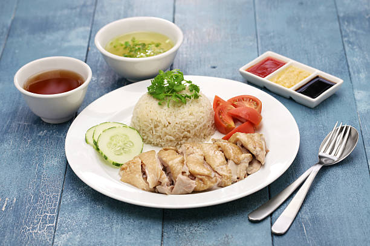

Chicken Rice
Easy to make homemade hainanese chicken rice which you do not need an oven
Ingredients
- Whole Chikcn
- Oyster Sauce
- Chilly Flakes
- Soya Sauce
- Coriander
- Spring onion
- Sesame Oil
- Ginger and Garlic
- 5 cups of rice
- Lemon Grass
- Sliced Cucumber
Steps
- Stuff the chicken with whole garlic and ginger
- Fill water in a container for boiling water and boil water
- Add about 5 spoons of salt in the boiling water
- Add about 5 drips of sesame oil
- Put in the chicken in the water and let it simmer for around 30mins to 1hour, make sure you cover the container
- Wash the rice and lemon grass and put it in rice cooker
- While simmering the chicken, remove the residues that float in the broth
- Once the chicken is cooked, remove it and set it aside
- Pour the broth into the rice cooker and then put the rice cooker on cook
- Making the black sauce
- In a bowl, put in some oyster sauce
- Soya Sauce
- Mix it well, if you want it more thicker, add in more oyster sauce
- Making the chilly
- Some chilli flakes, put it in the mixture
- Add in some chicken broth
- Blend it well
- Remove all the stuffed Ginger and garlic from the chicken
- Cut the chicken in stripes big enough to be served well
- Once rice is cooked, for one serving, A bowl of rice is used to serve on plate
- Add the chicken meat on the plate
- Add the cucumber
- On two sauce bowls, on one, serve the black sauce and the other serve the chilly